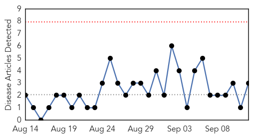
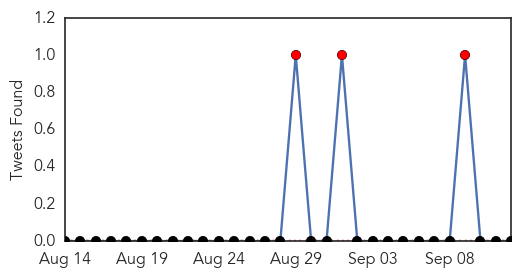
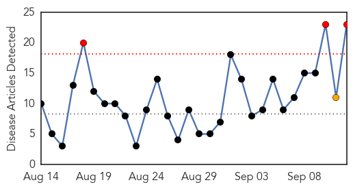
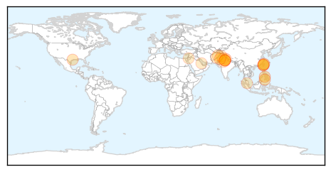

Swine Flu
30-Day Web Trend
0 alerts, 0 warnings

30-Day Twitter Trend
3 alerts, 0 warnings

Article Locations
Article Confidences

Top Articles:
Top Tweets:
-
No tweets found for Sep 12, 2015
Dengue Fever
30-Day Web Trend
3 alerts, 1 warnings

30-Day Twitter Trend
4 alerts, 0 warnings

Article Locations
Article Confidences

Top Articles:
- 0.994
- Dengue fever escalation sets single-day record: CDC
- 0.985
- 5 VS docs, 3 nurses down with dengue
- 0.982
- Two more die due to dengue
- 0.981
- Dengue fever shorts from around Asia
- 0.975
- PHO notes increase of dengue cases in Antique - Philippines
- 0.969
- Blood bank calls for donations as supplies in Tainan running low
- 0.835
- Dengue fever takes toll on Taiwan tourism
- 0.825
- Can America Cope with a Resurgence of Tropical Disease?
- 0.816
- Dengue fever takes toll on Taiwan city tourism - Xinhua
- 0.773
- Medics thrash guard, fracture his leg
- 0.760
- Health Ministry seeks report from Delhi Govt over death of child
- 0.737
- Malaysia General Business Sports and Lifestyle News
- 0.674
- Anti-dengue spray affected students stable: MS
- 0.656
- The Frontier Post,Pakistan,Peshawar
- 0.656
- The Frontier Post,Pakistan,Peshawar
- 0.656
- The Frontier Post,Pakistan,Peshawar
- 0.656
- The Frontier Post,Pakistan,Peshawar
- 0.656
- The Frontier Post,Pakistan,Peshawar
- 0.656
- The Frontier Post,Pakistan,Peshawar
- 0.588
- Vasundhara Raje directs medical department to activate task force to contain seasonal diseases
- 0.587
- Raje directs medical dept to activate task force to contain
- 0.562
- Couple end life after son dies of dengue, Hospitals get notice
- 0.516
- Delhi Government Show-Causes 2 Hospitals for Refusing 7-Year-Old Dengue Patient
Top Tweets:
-
No tweets found for Sep 12, 2015